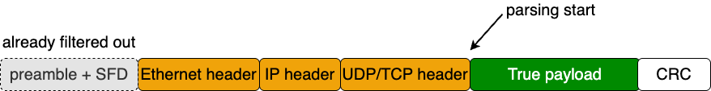
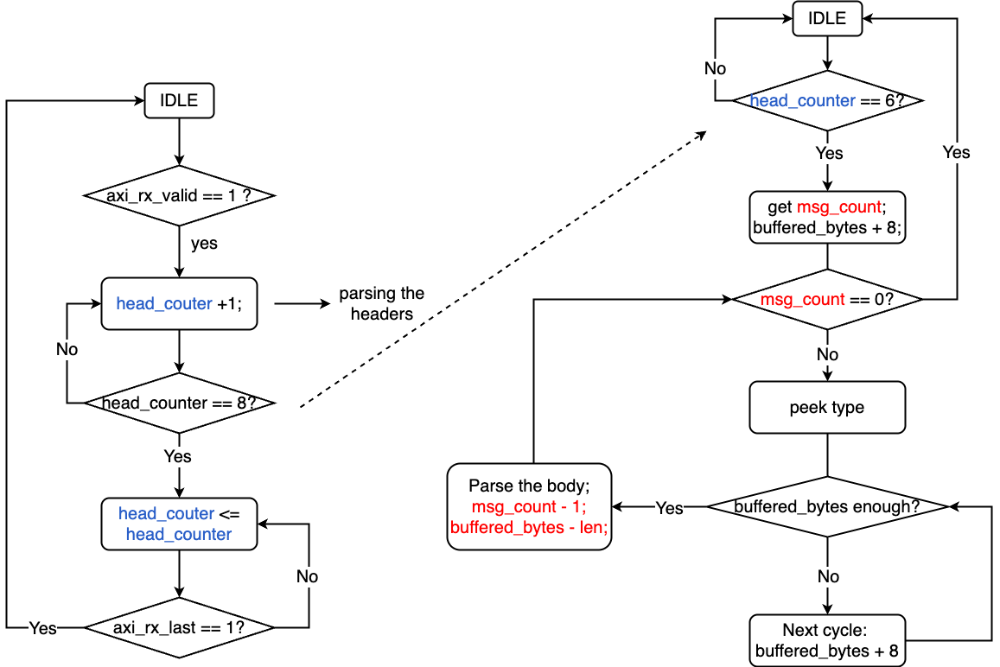
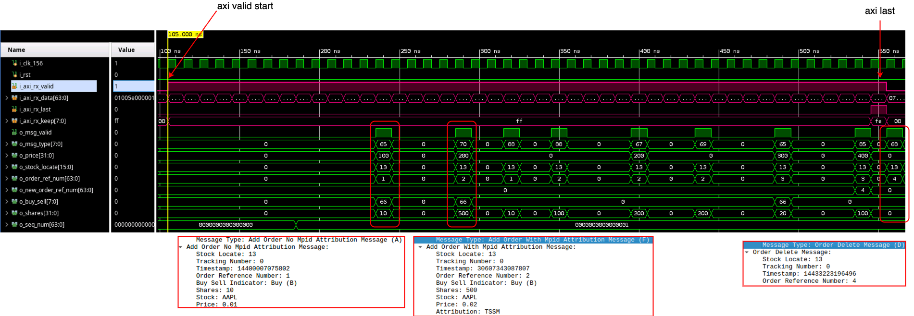

order_book_parser
Parse order messages packed in ITCH 5.0 in the payload from MAC_layer_rx. It also drops unrelated messages.
Design Logic
The module first walks through fixed packet headers, then peeks message count and message type, and finally extracts fields such as stock_locate, order_ref_num, shares, and price, as parallel signals to the next module.
The header
Before pasing the messages, we have to deal with Ethernet head, IP header and UDP/TCP header (The preabmle+SFD has already been filtered out in MAC layer), as illustrated below:

The lengths of headers are always fixed. The parsing of them is easy. We use a counter (head_counter) to indicate the end of headers.
The messages
For each message, parsing is not finised until we hit the end from i_axi_rx_data. Thus, we have to wait for it (use a buffer). However, The end of the previous message and the start of the next message may be mixed in one i_axi_rx_data. So, we need another counter (buffed_bytes).
States
In the big picture, as stated above, the parsing can be divided into two phases:
- header parsing.
- message parsing.
header parsing triggers message parsing. The flow chart is shown below:

- At the begining, header parsing will be kicked off when
i_axi_rx_valid == 1, from whichhead_counterstarts to+1. - When it reaches
6, it triggers the message parsing phase, It getsmsg_countand start to buffer. - Every time when
msg_count !=1, it peeks the type and wait until the buffer has enough bytes. - Once it parsed the message,
msg_count <= msg_count -1;andbuffered_byteswill also be subtracted corresponding length. - The peak type -> data to buffer -> parse loop will be exectued again, until
msg_count == 0. - For unknown types, the
defaultcase will do nothing except subtractmsg_countandbuffered_bytes.
Control from the host
I want to add control like filtering out frames sent to other IP or MACs, realized by host sending register control signals through PCIe. However, this has nothing to do with the parsing itself, so now it is suspended. Will be realized in the future.
Interface
Inputs
i_clk_156is the parser clock.i_rstclears the header parser, message parser, and output registers.i_axi_rx_data,i_axi_rx_valid,i_axi_rx_keep,i_axi_rx_last, andi_axi_rx_ingress_tickcome fromMAC_layer_rx.i_ctl_dst_mac,i_ctl_dst_ip,i_ctl_dst_port,i_promiscuous,i_sync_fire, andi_ctl_regprogram the parser settings registers.
Outputs
o_axi_rx_readyis tied high, so this block always accepts incoming beats.o_msg_validpulses when one complete message has been decoded.o_seq_numando_rx_ingress_tickcarry packet-level context.o_msg_type,o_stock_locate,o_order_ref_num,o_new_order_ref_num,o_buy_sell,o_shares,o_price, ando_timestampcarry the parsed order-book fields.
Sliding Buffer
The module keeps a 512-bit (64 bytes) history window so fields can cross AXI beat boundaries without special cases.
reg [511:0] prev_buff;
wire [511:0] cur_buff = {prev_buff[447:0], i_axi_rx_data};
wire [6:0] valid_bytes = buffed_bytes < 7'd6 ? 7'd0 : buffed_bytes - 7'd6;
prev_buff is sequential state. cur_buff mixes the previous window with the current beat, which lets the parser read the next field one cycle earlier. valid_bytes accounts for the fixed 6-byte gap between the current parse boundary and the start of the valid window.
here the -7'd6 is because the time we parse the message body, we are actually at the half of seq_num (header_counter is 7), which is 3 bytes. Plus the message_count field, we have total 6 bytes offset from the buffer starting point.
State Machine
The body parser is a 5-state machine.
-
IDLE:- Clear parser-local state such as
prev_buff,o_msg_valid,buffed_bytes,o_msg_type, andmsg_count. - Wait until
head_counter == 6, then move toPEEKING_MSG_COUNT.
- Clear parser-local state such as
-
PEEKING_MSG_COUNT:- Wait for
i_axi_rx_valid. - Latch the packet message count from
i_axi_rx_data[31:16]. - Shift the current AXI beat into
prev_buff, incrementbuffed_bytes, and move toPEEKING_TYPE.
- Wait for
-
PEEKING_TYPE:- Clear the previous decoded message outputs.
- If
msg_count == 0, return toIDLE. - Otherwise, wait for
i_axi_rx_valid, peek the next message type withtake_data(cur_buff, valid_bytes-2, 1), shift in the new beat, and move toPARSING_BODY.
-
PARSING_BODY:- If
buffed_bytes >= 64, enterERROR. - If
valid_bytesis large enough formsg_len_bytes(peeked_type), decode one full message, decrementmsg_count, and return toPEEKING_TYPE. - Otherwise, keep shifting AXI beats into the sliding buffer until enough bytes are available.
- If
-
ERROR:- Stop decoding and hold state until
i_axi_rx_lastarrives. - Return to
IDLEat the end of the packet.
- Stop decoding and hold state until
-
PARSING_HEADER:- This state is declared in the RTL but is not used by the current transition logic.
Supported Message Types
The parser recognizes seven message types and uses msg_len_bytes() to decide when a full message is present.
-
A(7'd38):- Outputs
stock_locate,timestamp,order_ref_num,buy_sell,shares, andprice. - Skips tracking number and stock symbol.
- Outputs
-
X(7'd25):- Outputs
stock_locate,timestamp,order_ref_num, and canceledshares.
- Outputs
-
D(7'd21):- Outputs
stock_locate,timestamp, andorder_ref_num.
- Outputs
-
U(7'd37):- Outputs
stock_locate,timestamp, originalorder_ref_num,new_order_ref_num,shares, andprice.
- Outputs
-
E(7'd33):- Outputs
stock_locate,timestamp,order_ref_num, and executedshares. - Skips match number.
- Outputs
-
F(7'd42):- Outputs
stock_locate,timestamp,order_ref_num,buy_sell,shares, andprice. - Skips stock symbol and attribution.
- Outputs
-
C(7'd38):- Outputs
stock_locate,timestamp,order_ref_num,shares, andprice. - Skips match number, printable flag, and attribution.
- Outputs
-
Shared note:
- Fields such as tracking number are consumed for alignment but are not exposed at the output interface.
Field Extraction
take_data() reads a field from cur_buff by byte index and width, then preserves the original byte order in the output register.
take_data[(width_bytes-i)*8-1 -: 8] =
prev_buff[(index_bytes-i)*8-1 -: 8];
This helper is the reason each message case can describe fields in byte offsets instead of manually slicing every possible boundary crossing.
Waveform snapshot
Below shows an example of the waveform, in which the orders are parsed by this module. The pink waves are axi data comming from MAC_layer_rx. It can be noted after several cycles (the headers), the messages are parsed out, indicated by o_msg_valid. There are also three examples of message TYPE_A, TYPE_F and TYPE_U.

Design Limits
o_axi_rx_readyis always1'b1, so this module provides no receive backpressure.i_axi_rx_keepis present on the interface but is not used in the current parser logic.- The programmable destination filters are stored but not applied to gate parsing.
- If
buffed_bytes >= 64, the parser entersERRORand waits fori_axi_rx_last.